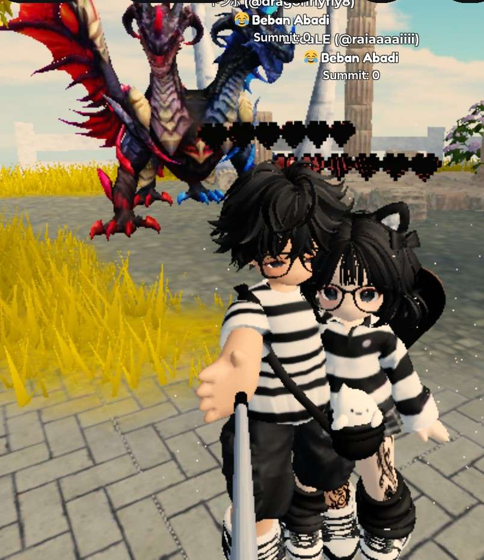
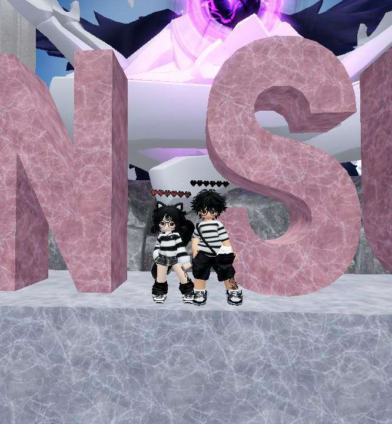
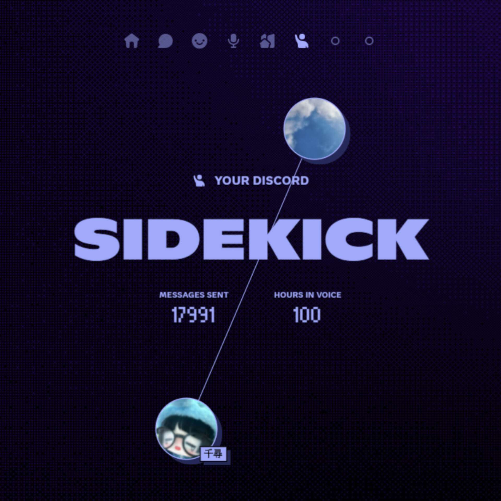

For Rasmalai 💕
This website is a little gift for you, ma'am.
Thank you for making my world brighter every day. 💗
🌹 Things I love about you
- Your beautiful voice
- Your caring heart
- Your support and love
- The way you make everything feel better
- The way you tampo on small things
- Your bravery and just how awesome you are
- Everything about you from your hair to feet
- nevr seen your feet tho
📸 Some Beautiful memorise because of you
  Unforgetable times 💖

The things I have in my heart for you.
I know there have many difficulties for you in past, I can understand how terrifying it would have been for you but you fought through all that and are standing bravely and proud. I respect you from bottom of my heart. I can understand your situation right now is scary and I wanted to be your break from all those things but ended up becoming a burden... I am really sorry for all the problems and inconvenience I have caused you. I just wanted to become yours and love you forever.... I just wanna say Hey ma'am I sincerely apologise for my actions and I am sorry for becoming a burden to you and please don't even think about giving up or anything just yet. I am sorry that I wasn't able to be everything and enough for you. I just wanted to be the part of your happiness. I really love you a lot but I can understand your fear too and I understand now my begging and asking for another chance is futile. But I don't wanna have any regrets so I will ask and beg you this time again PLEASE TRUST ME But if you think you are better off without me then yes please don't listen to any of my begging. In the conclusion I just wanna say you are awesome,great,amazing,cool,brave, beutiful and kind hearted person, and I LOVE YOU. DON'T GIVE UP . I know and I understand that saying "don't give up" then actually being in the situation is a whole different thing but even if the times are hard and difficult right now but there will be a morning when everything will be good and fixed just keep going and stay strong. You got this!